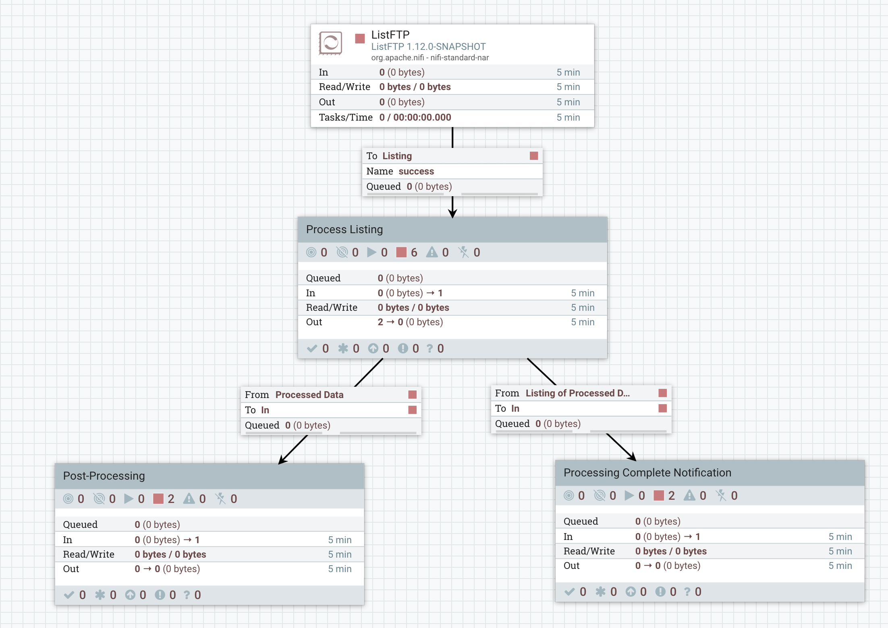
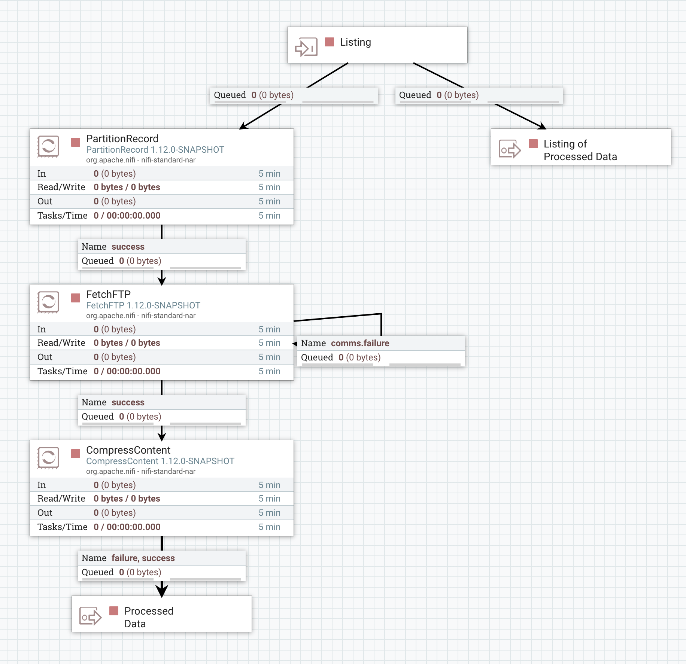

ListFTP performs a listing of all files that it encounters in the configured directory of an FTP server. There are two common, broadly defined use cases.
By default, the Processor will create a separate FlowFile for each file in the directory and add attributes for filename, path, etc. A common use case is to connect ListFTP to the FetchFTP processor. These two processors used in conjunction with one another provide the ability to easily monitor a directory and fetch the contents of any new file as it lands on the FTP server in an efficient streaming fashion.
Another common use case is the desire to process all newly arriving files in a given directory, and to then perform some action only when all files have completed their processing. The above approach of streaming the data makes this difficult, because NiFi is inherently a streaming platform in that there is no "job" that has a beginning and an end. Data is simply picked up as it becomes available.
To solve this, the ListFTP Processor can optionally be configured with a Record Writer. When a Record Writer is configured, a single FlowFile will be created that will contain a Record for each file in the directory, instead of a separate FlowFile per file. With this pattern, in order to fetch the contents of each file, the records must be split up into individual FlowFiles and then fetched. So how does this help us?
We can still accomplish the desired use case of waiting until all files in the directory have been processed by splitting apart the FlowFile and processing all of the data within a Process Group. Configuring the Process Group with a FlowFile Concurrency of "Single FlowFile per Node" means that only one FlowFile will be brought into the Process Group. Once that happens, the FlowFile can be split apart and each part processed. Configuring the Process Group with an Outbound Policy of "Batch Output" means that none of the FlowFiles will leave the Process Group until all have finished processing. As a result, we can build a flow like the following:
In this flow, we perform a listing of a directory with ListFTP. The processor is configured with a Record Writer (in this case a CSV Writer, but any Record Writer can be used) so that only a single FlowFile is generated for the entire listing. That listing is then sent to the "Process Listing" Process Group (shown below). Only after the contents of the entire directory have been processed will data leave the "Process Listing" Process Group. At that point, when all data in the Process Group is ready to leave, each of the processed files will be sent to the "Post-Processing" Process Group. At the same time, the original listing is to be sent to the "Processing Complete Notification" Process Group. In order to accomplish this, the Process Group must be configured with a FlowFile Concurrency of "Single FlowFile per Node" and an Outbound Policy of "Batch Output."
The "Process Listing" Process Group that is described above looks like this:
A listing is received via the "Listing" Input Port. This is then sent directly to the "Listing of Processed Data" Output Port so that when all processing completes, the original listing will be sent out also.
Next, the listing is broken apart into an individual FlowFile per record. Because we want to use FetchFTP to fetch the data, we need to get the file's filename and path as FlowFile attributes. This can be done in a few different ways, but the easiest mechanism is to use the PartitionRecord processor. This Processor is configured with a Record Reader that is able to read the data written by ListFTP (in this case, a CSV Reader). The Processor is also configured with two additional user-defined properties:
path: /pathfilename: /filename
As a result, each record that comes into the PartitionRecord processor will be split into an individual FlowFile (because the combination of the "path" and "filename" fields will be unique
for each Record) and the "filename" and "path" record fields will become attributes on the FlowFile. FetchFTP is configured to use a value of ${path}/${filename}
for the "Remote File" property, making use of these attributes.
Finally, we process the data - in this example, simply by compressing it with GZIP compression - and send the output to the "Processed Data" Output Port. The data will queue up here until all data is ready to leave the Process Group and then will be released.
When the Processor is configured to write the listing using a Record Writer, the Records will be written using the following schema (in Avro format):
{
"type": "record",
"name": "nifiRecord",
"namespace": "org.apache.nifi",
"fields": [{
"name": "filename",
"type": "string"
}, {
"name": "path",
"type": "string"
}, {
"name": "directory",
"type": "boolean"
}, {
"name": "size",
"type": "long"
}, {
"name": "lastModified",
"type": {
"type": "long",
"logicalType": "timestamp-millis"
}
}, {
"name": "permissions",
"type": ["null", "string"]
}, {
"name": "owner",
"type": ["null", "string"]
}, {
"name": "group",
"type": ["null", "string"]
}]
}